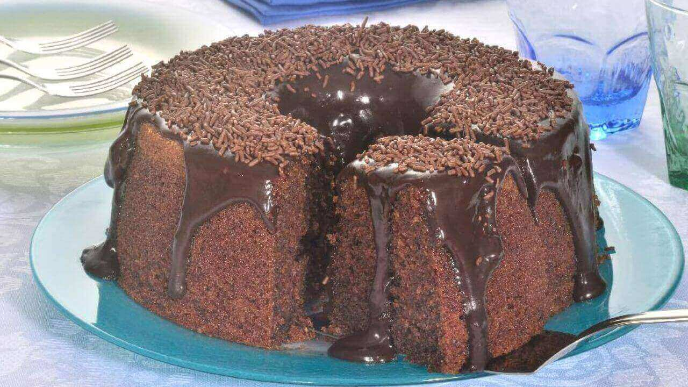

Não há companhia melhor para uma tarde fria que uma xícara de café e um bolo de chocolate molhadinho. A massa úmida quentinha saída do forno é um abraço a cada mordida e melhora o humor de qualquer um, independente de quão ruim tenha sido o seu dia.

Tempo de preparo: 50min
Porções: 12 fatias
Ingredientes:
Massa:
3 ovos
2 xícaras (chá) de farinha e trigo
1/2 xícara (chá) de óleo
1 pitada de sal
1 e 1/2 xícara (chá) de açúcar
1 xícara (chá) de chocolate em pó ou achocolatado
1 colher (sopa) de fermento em pó
1 xícara (chá) de água quente
Cobertura:
4 colheres (sopa) de leite
1 colher (sopa) de manteiga
1/2 xícara (chá) de chocolate em pó
1 xícara (chá) de açúcar
Modo de preparo:
Massa:
Em um liquidificador, bata os ovos, o açúcar, o óleo, o achocolatado e a farinha de trigo.
Despeje a massa em uma tigela e adicione a água quente e o fermento, misturando bem.
Despeje a massa em uma forma untada e asse em forno médio-alto (200° C), preaquecido, por 40 minutos.
Desenforme ainda quente.
Cobertura:
Em uma panela, leve todos os ingredientes ao fogo até levantar fervura.